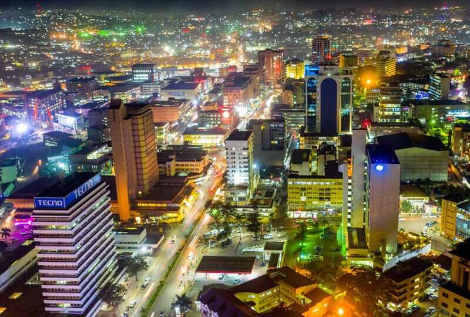

Data
- Area: 189 sq km
- Population: 1,650,800
- Capital: Kampala
- Languages: English, Luganda
- Currency: Ugandan Shilling (UGX)
- Time Zone: UTC+3
- Calling Code: +256
- Internet TLD: .ug
Weather ⛅
- Temperature: Loading...
- Conditions: Loading...
- Wind: Loading...
- Wind Chill: Calculating...